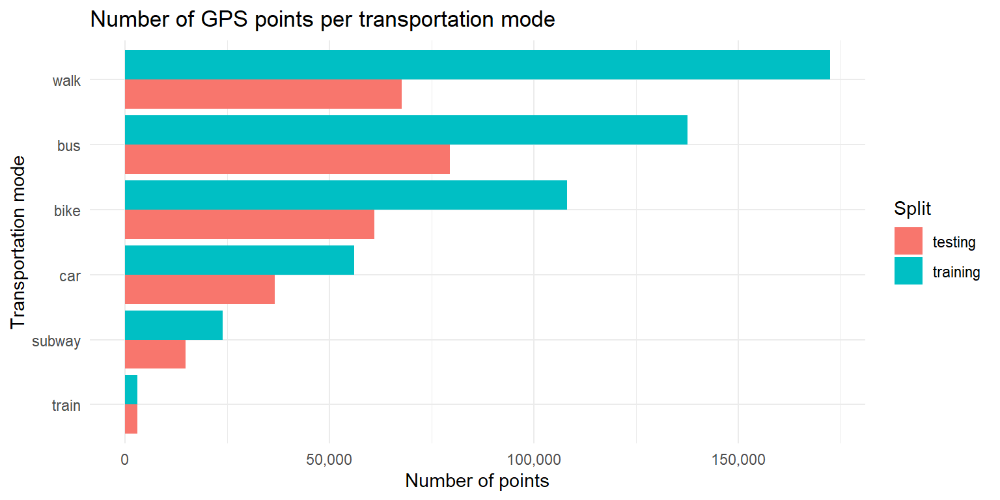
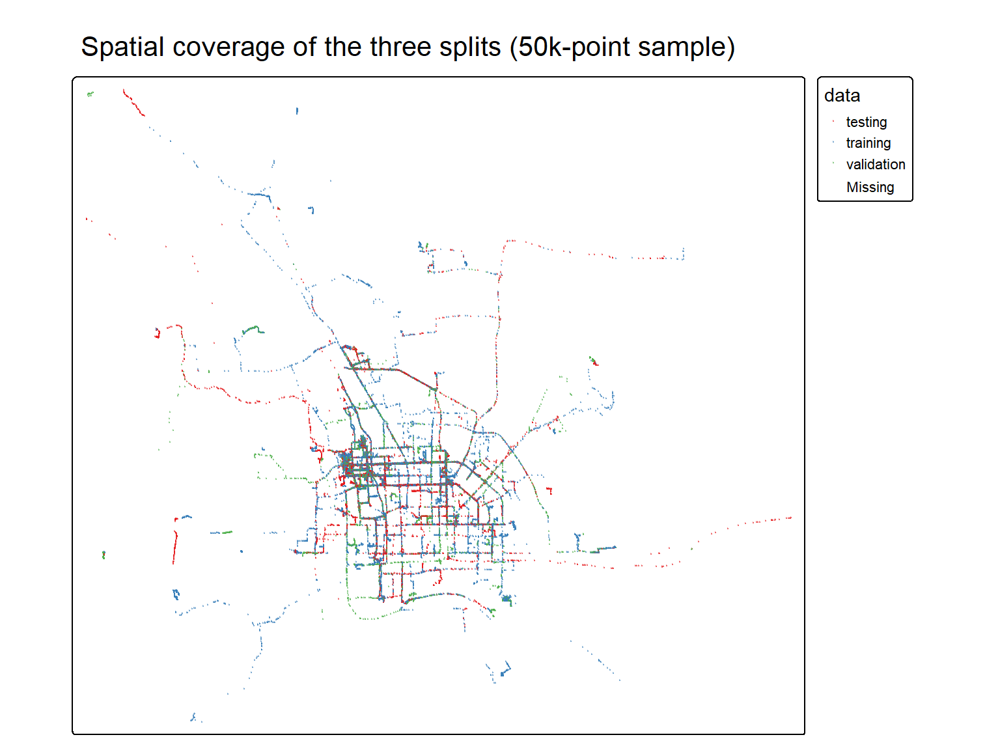
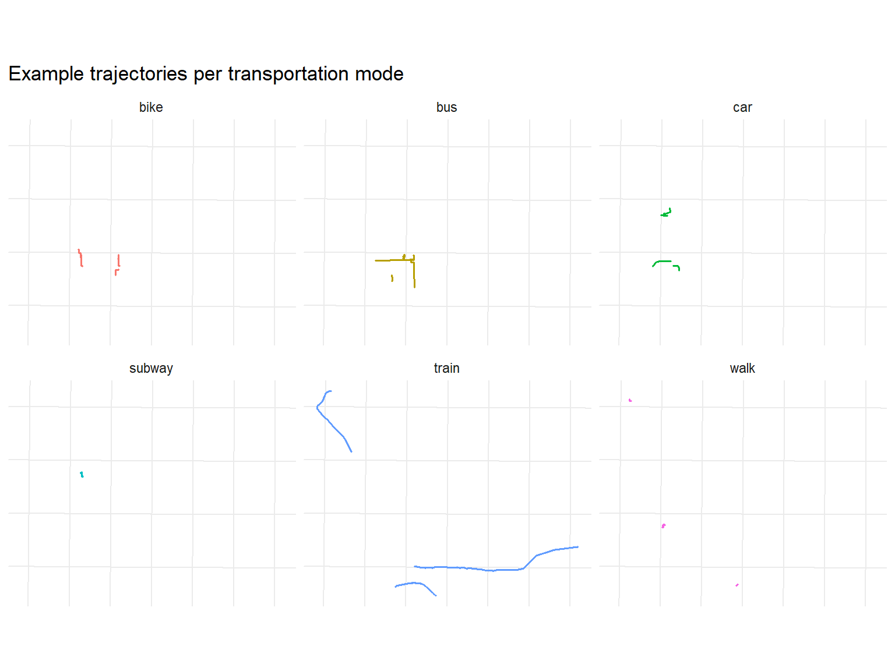
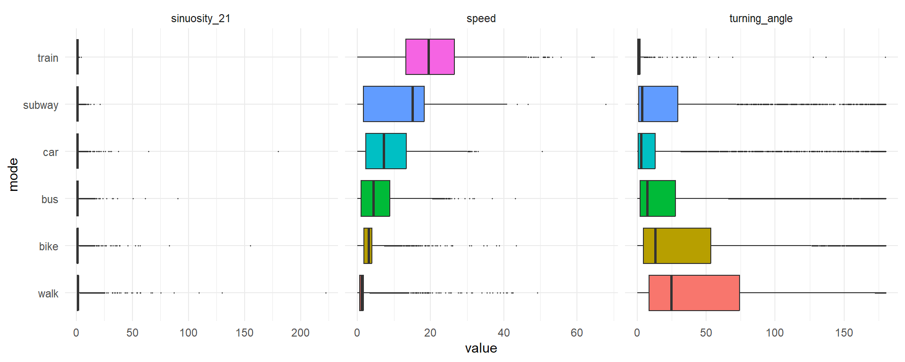
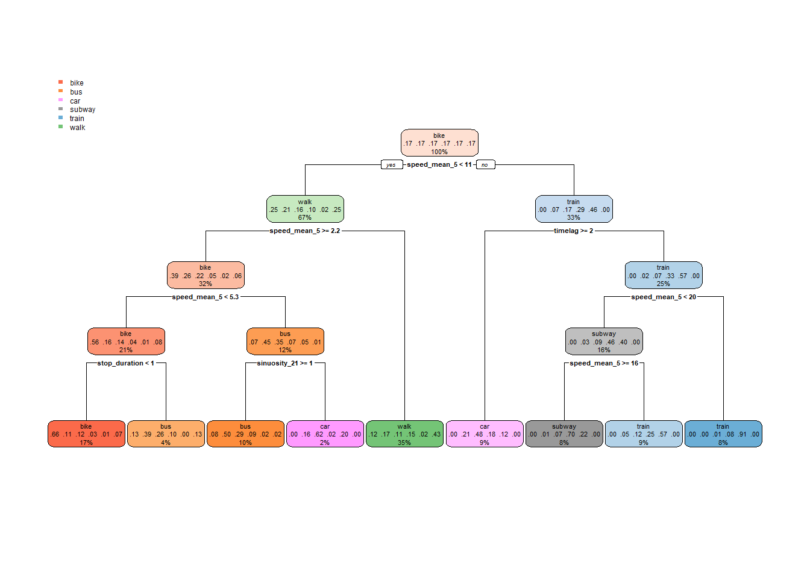
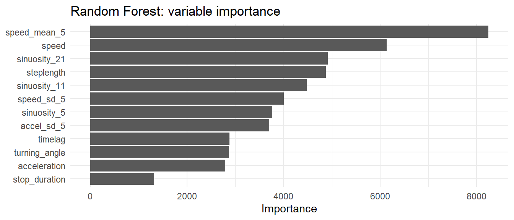
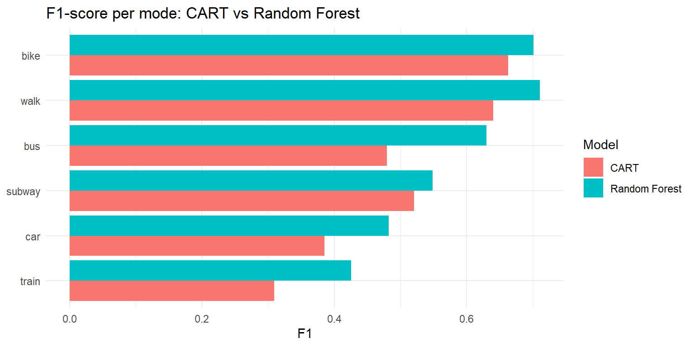
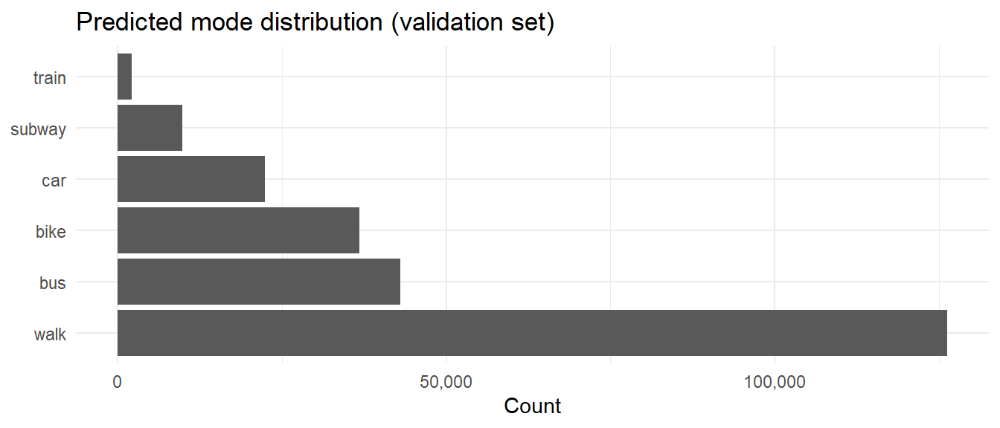

# Set working directory
setwd("C:/Workspace/ZHAW/6_Semester/STDS/movement-analysis-1")
# Set seed for reproducibility
set.seed(42)
# Load libraries
library(sf)
library(dplyr)
library(ggplot2)
library(forcats)
library(tmap)
library(zoo)
library(caret)
library(ranger)
library(tidyr)
library(knitr)
library(rpart)
library(rpart.plot) Solution for Movement Analysis 1
In this document, I solve the task for Movement Analysis I of the course Spatiotemporal Datascience.
Task
Your goal is to predict the transportation mode for each individual point in the validation dataset. The minimal example shows a simpler per-segment approach as a starting point — your task is to extend it to per-point predictions.
To do so, you will need to:
1 Feature Engineering: Create features that capture movement behaviour at the point level. For example, you could consider turning angles, stop durations, or varying the observation window size.
2. Model Selection: Experiment with different models (e.g., random forests, gradient boosting, neural networks) and hyperparameters to improve predictive performance.
Solutions
Structure
- Data exploration: Understand the structure, scale and class distribution of the dataset.
- Feature engineering: Derive movement parameters at the point level and over different observation windows.
- Model training: Fit and tune classification models on the per-point features.
- Evaluation: Assess model performance on the testing set and discuss strengths and weaknesses.
- Prediction: Apply the final model to the unlabeled validation set.
Preparation
Load Data
# Inspect the layers in the GeoPackage
st_layers("data/tracks_1.gpkg")Driver: GPKG
Available layers:
layer_name geometry_type features fields crs_name
1 training Point 501432 5 WGS 84 / UTM zone 50N
2 testing Point 262851 5 WGS 84 / UTM zone 50N
3 validation Point 240449 4 WGS 84 / UTM zone 50N# Read each layer and tag the split it came from
training_dataset <- read_sf("data/tracks_1.gpkg", layer = "training") |>
mutate(data = "training")
testing_dataset <- read_sf("data/tracks_1.gpkg", layer = "testing") |>
mutate(data = "testing")
validation_dataset <- read_sf("data/tracks_1.gpkg", layer = "validation") |>
mutate(data = "validation")
full_dataset <- bind_rows(training_dataset, testing_dataset, validation_dataset)Step 1: Data Exploration
Before any feature engineering or modelling, I want to understand data i am working with: how many points, how many tracks, how the transportation modes are distributed across the splits, etc.. For this I conduct a small EDA.
# Column overview
glimpse(full_dataset)Rows: 1,004,732
Columns: 7
$ user_id <int> 10, 10, 10, 10, 10, 10, 10, 10, 10, 10, 10, 10, 10, 10, 10, 1…
$ track_id <int> 95, 95, 95, 95, 95, 95, 95, 95, 95, 95, 95, 95, 95, 95, 95, 9…
$ datetime <dttm> 2008-06-18 16:47:35, 2008-06-18 16:47:37, 2008-06-18 16:47:3…
$ alt <dbl> 161, 161, 161, 161, 161, 161, 161, 157, 157, 157, 157, 154, 1…
$ mode <chr> "bus", "bus", "bus", "bus", "bus", "bus", "bus", "bus", "bus"…
$ geom <POINT [m]> POINT (454778.1 4419210), POINT (454775 4419210), POINT…
$ data <chr> "training", "training", "training", "training", "training", "…# Number of points and distinct tracks per split
split_overview <- full_dataset |>
st_drop_geometry() |>
group_by(data) |>
summarise(
n_points = n(),
n_tracks = n_distinct(track_id),
.groups = "drop"
)
kable(split_overview, caption = "Number of points and tracks per split")| data | n_points | n_tracks |
|---|---|---|
| testing | 262851 | 561 |
| training | 501432 | 1048 |
| validation | 240449 | 518 |
# Time range covered by the data
full_dataset |>
st_drop_geometry() |>
summarise(
first_timestamp = min(datetime, na.rm = TRUE),
last_timestamp = max(datetime, na.rm = TRUE)
)# A tibble: 1 × 2
first_timestamp last_timestamp
<dttm> <dttm>
1 2007-04-15 02:52:14 2011-12-31 16:16:37# Coordinate reference system
st_crs(full_dataset)$Name[1] "WGS 84 / UTM zone 50N"Class distribution
# Counts per transportation mode within the labelled splits
class_distribution <- full_dataset |>
st_drop_geometry() |>
filter(!is.na(mode)) |>
group_by(data, mode) |>
summarise(
n_points = n(),
n_tracks = n_distinct(track_id),
.groups = "drop"
) |>
arrange(data, desc(n_points))
kable(class_distribution, caption = "Class distribution in the labelled splits")| data | mode | n_points | n_tracks |
|---|---|---|---|
| testing | bus | 79469 | 146 |
| testing | walk | 67727 | 181 |
| testing | bike | 60978 | 101 |
| testing | car | 36667 | 83 |
| testing | subway | 14918 | 44 |
| testing | train | 3092 | 6 |
| training | walk | 172436 | 389 |
| training | bus | 137667 | 246 |
| training | bike | 108170 | 177 |
| training | car | 56118 | 160 |
| training | subway | 23952 | 66 |
| training | train | 3089 | 10 |
# Reorder modes by total count for a cleaner plot
mode_order <- class_distribution |>
group_by(mode) |>
summarise(total = sum(n_points), .groups = "drop") |>
arrange(total) |>
pull(mode)
class_distribution |>
mutate(mode = factor(mode, levels = mode_order)) |>
ggplot(aes(x = n_points, y = mode, fill = data)) +
geom_col(position = "dodge") +
scale_x_continuous(labels = scales::comma) +
labs(
title = "Number of GPS points per transportation mode",
x = "Number of points",
y = "Transportation mode",
fill = "Split"
) +
theme_minimal()
Spatial overview
Plotting all 1M+ points would be slow, I therefore work with a random sample for the overview map.
# Sample for performance
overview_sample <- full_dataset |>
slice_sample(n = 50000)
tmap_mode("plot")
tm_shape(overview_sample) +
tm_dots(col = "data", size = 0.02, alpha = 0.4, palette = "Set1") +
tm_layout(legend.outside = TRUE,
main.title = "Spatial coverage of the three splits (50k-point sample)")
To get a feel for how different transportation modes look spatially, I also plot a small random sample of labelled tracks, coloured by mode.
# Pick a few random tracks per mode for visual comparison
example_tracks <- full_dataset |>
st_drop_geometry() |>
filter(!is.na(mode)) |>
distinct(mode, track_id) |>
group_by(mode) |>
slice_sample(n = 4) |>
ungroup()
example_points <- full_dataset |>
semi_join(example_tracks, by = c("mode", "track_id"))
ggplot(example_points) +
geom_sf(aes(color = mode), size = 0.2, alpha = 0.6) +
facet_wrap(~ mode) +
labs(
title = "Example trajectories per transportation mode",
color = "Mode"
) +
theme_minimal() +
theme(legend.position = "none",
axis.text = element_blank(),
axis.ticks = element_blank())
Takeaways from this exploration
- Class imbalance: Among the labelled data,
walkandbusare the most frequent modes, whiletrainandsubwayare clearly underrepresented. Per-point classification will therefore have to deal with this imbalance. - Spatial scale: The example trajectories show very different spatial signatures:
walkandbikeproduce dense, curvy traces over short distances, whiletrainandsubwayproduce long, very straight lines. This is a strong hint that features capturing straightness/sinuosity over different window sizes as well as speed and acceleration should be informative on a per-point basis. - Projected coordinates: Because the geometry is already in UTM 50N, subsequent calculations of
steplength,speedandaccelerationcan use Euclidean distances in metres without further projection.
Step 2: Feature eingineering
For per-point classification each point has to carry enough information on its own. I compute features at three scopes: instantaneous parameters (steplength, timelag, speed, acceleration, turning angle), short-window dynamics (rolling mean / sd of speed and acceleration), sinuosity at three window sizes (5, 11, 21 points), and a stop duration feature that counts near-stationary points in a local window to capture waiting behaviour at e.g. bus stops or traffic lights.
I extract x and y from the geometry once and use them throughout.
coords <- st_coordinates(full_dataset)
full_dataset$x <- coords[, 1]
full_dataset$y <- coords[, 2]
full_dataset <- arrange(full_dataset, track_id, datetime)Per-point parameters
All derivations are grouped by track_id so values do not leak across track boundaries.
full_dataset <- full_dataset |>
mutate(
steplength = sqrt((lead(x) - x)^2 + (lead(y) - y)^2),
timelag = as.numeric(difftime(lead(datetime), datetime, units = "secs")),
speed = steplength / timelag,
acceleration = (lead(speed) - speed) / timelag,
# Turning angle: change of bearing wrapped to [-pi, pi], then absolute, in degrees
bearing = atan2(lead(y) - y, lead(x) - x),
turning_angle = abs(((bearing - lag(bearing) + pi) %% (2 * pi)) - pi) * 180 / pi,
.by = track_id
) |>
select(-bearing)Multi-scale features
Sinuosity at three window sizes captures curvature from short wiggles to longer-range straightness. Rolling mean / sd of speed and acceleration capture the local dynamics (constant cruising vs. stop-and-go). The stop_duration feature counts how many of the surrounding 11 points are near-stationary (speed < 0.5 m/s), capturing waiting behaviour typical for bus stops or traffic lights.
full_dataset <- full_dataset |>
mutate(
sinuosity_5 = rollsum(steplength, 5, fill = NA, align = "left") /
sqrt((lead(x, 5) - x)^2 + (lead(y, 5) - y)^2),
sinuosity_11 = rollsum(steplength, 11, fill = NA, align = "left") /
sqrt((lead(x, 11) - x)^2 + (lead(y, 11) - y)^2),
sinuosity_21 = rollsum(steplength, 21, fill = NA, align = "left") /
sqrt((lead(x, 21) - x)^2 + (lead(y, 21) - y)^2),
speed_mean_5 = rollmean(speed, 5, fill = NA, align = "center"),
speed_sd_5 = rollapply(speed, 5, sd, fill = NA, align = "center"),
accel_sd_5 = rollapply(acceleration, 5, sd, fill = NA, align = "center"),
is_stop = as.numeric(speed < 0.5 | is.na(speed)),
stop_duration = rollsum(is_stop, 11, fill = NA, align = "center"),
.by = track_id
)Sanity check
A look at the first 15 points of an arbitrary bike track and a count of non-finite values per feature:
full_dataset |>
st_drop_geometry() |>
filter(mode == "bike") |>
slice(1:15) |>
select(datetime, speed, acceleration, turning_angle, sinuosity_5, sinuosity_21) |>
kable(digits = 2)| datetime | speed | acceleration | turning_angle | sinuosity_5 | sinuosity_21 |
|---|---|---|---|---|---|
| 2011-09-23 18:02:49 | 3.41 | 2.37 | NA | 1.03 | 2.68 |
| 2011-09-23 18:02:50 | 5.78 | 16.07 | 4.99 | 1.03 | 2.70 |
| 2011-09-23 18:02:51 | 21.85 | -18.63 | 4.46 | 1.05 | 2.78 |
| 2011-09-23 18:02:52 | 3.23 | -1.53 | 26.01 | 1.26 | 2.92 |
| 2011-09-23 18:02:53 | 1.69 | -0.58 | 25.69 | 1.69 | 2.79 |
| 2011-09-23 18:02:54 | 1.12 | -0.38 | 56.40 | 1.45 | 2.64 |
| 2011-09-23 18:02:55 | 0.74 | 1.37 | 68.12 | 1.49 | 2.59 |
| 2011-09-23 18:02:56 | 2.10 | 12.10 | 37.86 | 1.43 | 2.59 |
| 2011-09-23 18:02:57 | 14.20 | -4.83 | 107.59 | 1.35 | 2.70 |
| 2011-09-23 18:02:58 | 9.37 | -1.04 | 83.43 | 1.78 | 2.07 |
| 2011-09-23 18:02:59 | 8.34 | -5.12 | 115.34 | 1.07 | 2.18 |
| 2011-09-23 18:03:00 | 3.22 | -2.98 | 38.66 | 1.44 | 1.48 |
| 2011-09-23 18:03:01 | 0.23 | 0.70 | 79.17 | 2.45 | 1.32 |
| 2011-09-23 18:03:02 | 0.93 | 4.52 | 0.00 | 35.58 | 1.30 |
| 2011-09-23 18:03:03 | 5.46 | -4.34 | 27.05 | 3.06 | 1.25 |
full_dataset |>
st_drop_geometry() |>
summarise(across(c(speed, acceleration, turning_angle,
sinuosity_5, sinuosity_11, sinuosity_21,
speed_mean_5, speed_sd_5, accel_sd_5, stop_duration),
~ sum(!is.finite(.x)))) |>
pivot_longer(everything(), names_to = "feature", values_to = "n_non_finite") |>
arrange(desc(n_non_finite)) |>
kable()| feature | n_non_finite |
|---|---|
| accel_sd_5 | 209632 |
| speed_mean_5 | 207627 |
| speed_sd_5 | 207627 |
| acceleration | 200608 |
| speed | 152651 |
| sinuosity_21 | 47965 |
| sinuosity_11 | 29298 |
| sinuosity_5 | 22067 |
| stop_duration | 21270 |
| turning_angle | 4254 |
There are many Non-finite values. They most likely come from track edges (lead/lag), duplicate timestamps (timelag = 0 causing division by zero), and zero-length straight distances over a window. Speed alone has ~15% non-finite values, and rolling-window features amplify this further because each Inf propagates to neighbouring points. All affected rows are dropped before training. After filtering, the training set still contains enough complete points per class for a robust model.
Distributions per mode
To check that the features actually separate the modes, I sample 100k labelled points and plot the three most important features per mode:
feature_sample <- full_dataset |>
st_drop_geometry() |>
filter(!is.na(mode)) |>
slice_sample(n = 100000) |>
mutate(mode = fct_reorder(mode, speed, median, na.rm = TRUE))
feature_sample |>
select(mode, speed, turning_angle, sinuosity_21) |>
pivot_longer(-mode, names_to = "feature") |>
filter(is.finite(value)) |>
ggplot(aes(value, mode, fill = mode)) +
geom_boxplot(outlier.size = 0.2) +
facet_wrap(~ feature, scales = "free_x") +
theme_minimal() +
theme(legend.position = "none")
Step 3: Model Training
I follow the same approach as the minimal example (CART via rpart) but apply it to per-point features instead of per-segment aggregates. Additionally i train a simple Random Forest model. With this approach I can easily and fairly compare the results of the baseline per-segment approach with the same model but on a per-point base and a slightly more complex Random-Forest model. To keep training fast and address class imbalance, I sample 10’000 points per class from the training set.
Prepare training data
# All features
feature_cols <- c("steplength", "timelag", "speed", "acceleration", "turning_angle",
"sinuosity_5", "sinuosity_11", "sinuosity_21",
"speed_mean_5", "speed_sd_5", "accel_sd_5", "stop_duration")
train_all <- full_dataset |>
st_drop_geometry() |>
filter(data == "training", !is.na(mode)) |>
select(all_of(c("mode", feature_cols))) |>
filter(if_all(where(is.numeric), is.finite)) |>
mutate(mode = factor(mode))
cat("Complete training points:", nrow(train_all), "\n")Complete training points: 378283 table(train_all$mode)
bike bus car subway train walk
71930 119207 47672 16134 2810 120530 Balanced sampling
The train class contains only 2’810 complete points and is upsampled to 10’000 via sampling with replacement. This is a standard oversampling approach to address class imbalance, though it means the model sees duplicated points for rare classes, which increases the risk of overfitting. A more sophisticated alternative would be SMOTE, which generates new synthetic points instead of duplicating existing ones. But for this exercise I chose to keep it simple.
n_per_class <- 10000
idx <- unlist(lapply(levels(train_all$mode), function(m) {
rows <- which(train_all$mode == m)
sample(rows, n_per_class, replace = TRUE)
}))
train_sample <- as.data.frame(train_all[idx, ])
cat("Balanced training set:\n")Balanced training set:table(train_sample$mode)
bike bus car subway train walk
10000 10000 10000 10000 10000 10000 CART model
cart_model <- rpart(mode ~ ., data = train_sample, method = "class")
rpart.plot(cart_model, type = 2)
Random Forest model
As an extension, I train a simple Random Forest on the same balanced sample and compare it to the rpart approach. A forest of 300 trees should capture non-linear interactions that a single CART tree misses.
rf_model <- ranger(mode ~ ., data = train_sample, num.trees = 300, importance = "impurity")
rf_modelRanger result
Call:
ranger(mode ~ ., data = train_sample, num.trees = 300, importance = "impurity")
Type: Classification
Number of trees: 300
Sample size: 60000
Number of independent variables: 12
Mtry: 3
Target node size: 1
Variable importance mode: impurity
Splitrule: gini
OOB prediction error: 23.57 % # Feature Importance
importance_df <- data.frame(
feature = names(rf_model$variable.importance),
importance = rf_model$variable.importance
)
ggplot(importance_df, aes(x = importance, y = reorder(feature, importance))) +
geom_col() +
labs(title = "Random Forest: variable importance", x = "Importance", y = NULL) +
theme_minimal()
Step 4: Evaluation
Prepare test data
test_df <- full_dataset |>
st_drop_geometry() |>
filter(data == "testing", !is.na(mode)) |>
select(all_of(c("mode", feature_cols))) |>
filter(if_all(where(is.numeric), is.finite)) |>
mutate(mode = factor(mode, levels = levels(train_sample$mode)))CART evaluation
cart_preds <- predict(cart_model, test_df)
test_df$pred_cart <- colnames(cart_preds)[apply(cart_preds, 1, which.max)]
test_df$pred_cart <- factor(test_df$pred_cart, levels = levels(test_df$mode))
confusionMatrix(test_df$pred_cart, reference = test_df$mode)Confusion Matrix and Statistics
Reference
Prediction bike bus car subway train walk
bike 28152 7017 3079 307 85 4829
bus 4120 25805 6765 989 583 2734
car 261 7818 8990 1023 128 50
subway 5 122 1058 4928 312 93
train 86 1289 2990 2118 1756 190
walk 8817 24471 5512 3043 72 44446
Overall Statistics
Accuracy : 0.5591
95% CI : (0.5569, 0.5612)
No Information Rate : 0.326
P-Value [Acc > NIR] : < 2.2e-16
Kappa : 0.4256
Mcnemar's Test P-Value : < 2.2e-16
Statistics by Class:
Class: bike Class: bus Class: car Class: subway
Sensitivity 0.6793 0.3879 0.31662 0.39716
Specificity 0.9058 0.8895 0.94717 0.99170
Pos Pred Value 0.6476 0.6295 0.49206 0.75606
Neg Pred Value 0.9172 0.7503 0.89555 0.96213
Prevalence 0.2031 0.3260 0.13916 0.06081
Detection Rate 0.1380 0.1265 0.04406 0.02415
Detection Prevalence 0.2130 0.2009 0.08954 0.03194
Balanced Accuracy 0.7926 0.6387 0.63189 0.69443
Class: train Class: walk
Sensitivity 0.598093 0.8491
Specificity 0.966819 0.7237
Pos Pred Value 0.208328 0.5147
Neg Pred Value 0.993968 0.9329
Prevalence 0.014389 0.2565
Detection Rate 0.008606 0.2178
Detection Prevalence 0.041310 0.4232
Balanced Accuracy 0.782456 0.7864Random Forest evaluation
test_df$pred_rf <- predict(rf_model, data = as.data.frame(test_df[, feature_cols]))$predictions
confusionMatrix(test_df$pred_rf, reference = test_df$mode)Confusion Matrix and Statistics
Reference
Prediction bike bus car subway train walk
bike 29765 6196 2008 236 174 4996
bus 4000 37892 7122 1186 454 3098
car 479 7526 12001 661 108 565
subway 277 1687 3377 7371 694 1041
train 28 377 1078 791 1438 106
walk 6892 12844 2808 2163 68 42536
Overall Statistics
Accuracy : 0.642
95% CI : (0.64, 0.6441)
No Information Rate : 0.326
P-Value [Acc > NIR] : < 2.2e-16
Kappa : 0.5334
Mcnemar's Test P-Value : < 2.2e-16
Statistics by Class:
Class: bike Class: bus Class: car Class: subway
Sensitivity 0.7183 0.5696 0.42266 0.59405
Specificity 0.9163 0.8847 0.94683 0.96308
Pos Pred Value 0.6862 0.7049 0.56237 0.51021
Neg Pred Value 0.9273 0.8095 0.91028 0.97343
Prevalence 0.2031 0.3260 0.13916 0.06081
Detection Rate 0.1459 0.1857 0.05882 0.03612
Detection Prevalence 0.2126 0.2634 0.10459 0.07080
Balanced Accuracy 0.8173 0.7271 0.68475 0.77856
Class: train Class: walk
Sensitivity 0.489782 0.8127
Specificity 0.988166 0.8367
Pos Pred Value 0.376637 0.6319
Neg Pred Value 0.992518 0.9283
Prevalence 0.014389 0.2565
Detection Rate 0.007048 0.2085
Detection Prevalence 0.018712 0.3299
Balanced Accuracy 0.738974 0.8247Model comparison
# Extract per-class F1 from both models
get_f1 <- function(cm) {
p <- cm$byClass[, "Precision"]
r <- cm$byClass[, "Recall"]
f1 <- 2 * p * r / (p + r)
data.frame(mode = gsub("Class: ", "", names(f1)), f1 = f1, row.names = NULL)
}
cm_cart <- confusionMatrix(test_df$pred_cart, test_df$mode)
cm_rf <- confusionMatrix(test_df$pred_rf, test_df$mode)
f1_comparison <- merge(
get_f1(cm_cart) |> rename(f1_cart = f1),
get_f1(cm_rf) |> rename(f1_rf = f1),
by = "mode"
)
kable(f1_comparison, digits = 3, caption = "Per-class F1 scores: CART vs Random Forest")| mode | f1_cart | f1_rf |
|---|---|---|
| bike | 0.663 | 0.702 |
| bus | 0.480 | 0.630 |
| car | 0.385 | 0.483 |
| subway | 0.521 | 0.549 |
| train | 0.309 | 0.426 |
| walk | 0.641 | 0.711 |
f1_comparison |>
pivot_longer(cols = c(f1_cart, f1_rf), names_to = "model", values_to = "f1") |>
mutate(model = if_else(model == "f1_cart", "CART", "Random Forest")) |>
ggplot(aes(x = f1, y = reorder(mode, f1), fill = model)) +
geom_col(position = "dodge") +
labs(title = "F1-score per mode: CART vs Random Forest",
x = "F1", y = NULL, fill = "Model") +
theme_minimal()
cat("Accuracy CART:", round(mean(test_df$pred_cart == test_df$mode), 4), "\n")Accuracy CART: 0.5591 cat("Accuracy Random Forest:", round(mean(test_df$pred_rf == test_df$mode), 4), "\n")Accuracy Random Forest: 0.642 cat("Macro F1 CART:", round(mean(f1_comparison$f1_cart, na.rm = TRUE), 4), "\n")Macro F1 CART: 0.4998 cat("Macro F1 Random Forest:", round(mean(f1_comparison$f1_rf, na.rm = TRUE), 4), "\n")Macro F1 Random Forest: 0.5834 Discussion
The CART model reaches 55.9% accuracy (Macro F1: 0.5), while the Random Forest does noticeably better at 64.2% (Macro F1: 0.58). That’s a jump of almost 10 percentage points just from using 300 trees instead of one. I report Macro F1 alongside accuracy because it treats all classes equally. With accuracy alone, the large classes (walk, bus) dominate the picture. For comparison, the per-segment baseline from the minimal example gets 69.3% accuracy, but that’s a much easier problem: classifying pre-aggregated segments with smoothed averages vs. thousands of raw, noisy GPS points. Being only 5 points below that baseline feels like a reasonable result given the difficulty. Looking at the per-class F1 scores, the Random Forest beats the CART on every single mode. Walk (~0.71) and bike (~0.70) work best, they simply have very different speed and curvature profiles. Bus sees the biggest improvement (from ~0.48 to ~0.63), probably because the RF picks up on feature combinations that a single tree can’t capture. Car (~0.48) and train (~0.43) remain the weakest classes. Car because it overlaps so heavily with bus in speed and acceleration, and train because there are only ~2’800 unique training points that get upsampled to 10’000. The variable importance plot makes sense in this context: speed_mean_5 and speed dominate, followed by sinuosity_21 and steplength. Speed does the heavy lifting for the coarse separation between modes, while sinuosity adds the geometric dimension, distinguishing e.g. straight train tracks from winding bike paths.
Step 5: Prediction on the Validation Set
I apply the Random Forest to the unlabelled validation set. Points where features couldn’t be computed (track boundaries with NAs) get the majority-vote label of their track as a fallback.
# Prepare validation features
val_all <- full_dataset |>
st_drop_geometry() |>
filter(data == "validation") |>
select(all_of(c("user_id", "track_id", "datetime", feature_cols)))
val_complete <- val_all |> filter(if_all(all_of(feature_cols), is.finite))
val_incomplete <- val_all |> filter(!if_all(all_of(feature_cols), is.finite))
# Predict complete cases
val_complete$pred_mode <- as.character(
predict(rf_model, data = as.data.frame(val_complete[, feature_cols]))$predictions
)
# For incomplete rows (track boundaries): use majority vote of same track
track_majority <- val_complete |>
count(track_id, pred_mode) |>
slice_max(n, n = 1, by = track_id, with_ties = FALSE) |>
select(track_id, pred_mode)
overall_majority <- names(which.max(table(val_complete$pred_mode)))
val_incomplete <- val_incomplete |>
left_join(track_majority, by = "track_id") |>
mutate(pred_mode = if_else(is.na(pred_mode), overall_majority, pred_mode))
# Combine and export
val_output <- bind_rows(
val_complete |> select(user_id, track_id, datetime, pred_mode),
val_incomplete |> select(user_id, track_id, datetime, pred_mode)
) |> arrange(track_id, datetime)
write.csv(val_output, "data/validation_predictions.csv", row.names = FALSE)
cat("Saved", nrow(val_output), "predictions to data/validation_predictions.csv\n")Saved 240449 predictions to data/validation_predictions.csvPrediction distribution
ggplot(val_output, aes(y = fct_infreq(pred_mode))) +
geom_bar() +
scale_x_continuous(labels = scales::comma) +
labs(title = "Predicted mode distribution (validation set)",
x = "Count", y = NULL) +
theme_minimal()
Discussion
The predicted distribution looks plausible: walk dominates (~126k points), followed by bus (~42k), then bike (~38k), car (~22k), subway (~10k) and last train as the rarest mode (~3k). This mirrors a similar class proportion as in the labelled data, which is a good sign. The model isn’t collapsing everything into one or two classes.
Reflection
This task asked us to classify transportation modes at the individual GPS point level, a step up from the per-segment approach in the minimal example. This is a genuinely harder problem: smoothing over segments hides GPS noise and produces clean features, while raw per-point values are messy and overlapping between classes. Despite this, the Random Forest reaches 64.2% accuracy and a Macro F1 of 0.58, which I think is a decent result given the constraints. The feature engineering turned out to be the most important part. Speed alone gets you surprisingly far, but the multi-scale sinuosity (5/11/21 points) and the stop duration feature add real value. They capture the shape and rhythm of movement that speed can’t express. The variable importance plot confirms this: speed_mean_5 leads, but sinuosity_21 and steplength follow closely. The biggest limitation is that all features are purely kinematic. Bus and car move in very similar ways, and without knowing where someone is (near a bus stop? on a highway?) the model simply can’t tell them apart reliably. This is a gap that could be filled with the additional necessary data. The train class is also tricky. With only ~2’800 unique training points, the model doesn’t see enough variety even with upsampling. For this Exercise I had some time constraints and therefore kept my models rather simple. With more time I’d try a Random Forest with more trees and tuned hyperparameters (for example via Grid search), or other more complex machine learning models. Post-processing the predictions with temporal smoothing (majority vote within a sliding window per track) could also help reduce label flickering. And of course, SMOTE instead of simple oversampling might give the rare classes a better chance. Over all I am happy with the results as they show even with a simple model, decent results are possible.
Use of AI
I tried to solve the tasks mostly without the help of AI, but I used Claude to correct my solutions and improve some of my code if I was stuck or unsure. At the beginning i had some strange issue with the ranger library, which I was then able to resolve with the help of Claude.